A collection of what Stable Diffusion imagines these artists' styles look like.
While having an overview is helpful, keep in mind that these styles only imitate certain aspects of the
artist's work (color, medium, location, etc.). They are limited by the rather superficial knowledge of SD,
but can probably give you a good base for your own creations.
Image Metadata
This will check an image for embedded Stable Diffusion data.
Stable Diffusion was trained with base dimensions of 512 pixels (SD 1.5) and 768 pixels (SD 2/2.1). While
it's not necessary to stick to multiples of 128, it's a good place to start.
1282563845126407688961024
Some of the common ratios in SD dimensions:
Square
1:1
512 × 512
Photo
2:3
512 × 768
Photo
3:4
512 × 683
Social Media
4:5
512 × 640
Standard Monitor
16:9
910 × 512
Monitor
16:10
819 × 512
UltraWide Monitor
21:9
1195 × 512
Art History - Some Pointers
Renaissance (14th-16th Centuries)
Famous Artists: Leonardo da Vinci, Michelangelo Buonarroti, Raffaello Sanzio da Urbino, Sandro
Botticelli
Medium: Oil on wood or canvas
Mannerism (16th Century)
Famous Artists: Michelangelo Merisi da Caravaggio, El Greco, Benvenuto Cellini, Jacopo Pontormo,
Parmigianino, Bronzino
Medium: Oil on canvas, sculpture, and architecture
Baroque (17th Century)
Famous Artists: Michelangelo Merisi da Caravaggio, Gian Lorenzo Bernini, Rembrandt van Rijn,
Peter Paul Rubens
Medium: Oil on canvas
Rococo (18th Century)
Famous Artists: Jean-Antoine Watteau, François Boucher, Jean-Honoré Fragonard
Medium: Oil on canvas
Neoclassicism (18th-19th Centuries)
Famous Artists: Jacques-Louis David, Jean-Auguste-Dominique Ingres, Antonio Canova
Medium: Oil on canvas
Romanticism (late 18th-19th Centuries)
Famous Artists: Joseph Mallord William Turner, Francisco de Goya y Lucientes, Eugène Delacroix,
Caspar David Friedrich
Medium: Oil on canvas
Realism (mid-19th Century)
Famous Artists: Gustave Courbet, Honoré Daumier, Jean-François Millet
Medium: Oil on canvas
Impressionism (late 19th Century)
Famous Artists: Claude Monet, Pierre-Auguste Renoir, Edgar Degas, Mary Cassatt
Medium: Oil on canvas
Symbolism (late 19th to early 20th Century)
Famous Artists: Gustave Moreau, Edvard Munch, Odilon Redon, Pierre Puvis de Chavannes, Fernand
Khnopff, Franz von Stuck
Medium: Oil on canvas, drawing, and printmaking
Expressionism (early 20th Century)
Famous Artists: Edvard Munch, Wassily Kandinsky, Ernst Ludwig Kirchner
Medium: Oil on canvas or woodcuts
Cubism (early 20th Century)
Famous Artists: Pablo Picasso, Georges Braque, Juan Gris
Medium: Oil on canvas or collage
Futurism (1909-1916)
Famous Artists: Umberto Boccioni, Giacomo Balla, Gino Severini
Medium: Oil on canvas or mixed media
Dada (1916-1924)
Famous Artists: Marcel Duchamp, Man Ray, Hannah Höch, Jean Arp, Francis Picabia, Kurt Schwitters
Medium: Collage, assemblage, and performance
Bauhaus (1919-1933)
Famous Artists: Walter Gropius, Ludwig Mies van der Rohe, Wassily Kandinsky, Paul Klee, Josef
Albers
Medium: Architecture, furniture, and graphic design
Surrealism (1920s-30s)
Famous Artists: Salvador Dalí, René Magritte, Max Ernst
Medium: Oil on canvas or mixed media
Abstract Expressionism (1940s-50s)
Famous Artists: Jackson Pollock, Mark Rothko, Willem de Kooning
Medium: Oil on canvas or mixed media
Pop Art (1950s-60s)
Famous Artists: Andy Warhol, Roy Lichtenstein, Richard Hamilton
Medium: Acrylic or oil on canvas or mixed media
Minimalism (1960s-70s)
Famous Artists: Donald Judd, Dan Flavin, Sol LeWitt
Medium: Acrylic or oil on canvas or mixed media
Postmodernism (1970s-90s)
Famous Artists: Cindy Sherman, Jeff Koons, Barbara Kruger
Medium: A wide range of media, including painting, sculpture, installation, and performance art
Camera Shot Size
What is a camera shot?
A camera shot is composed of the series of frames that are shot uninterrupted from the moment the camera
starts
rolling until it stops. Camera shots are an essential aspect of filmmaking and video productions, because by
combining different types of shots, angles and camera movements, the filmmakers are able to emphasize
specific
emotions, ideas and movement for each scene.
Extreme Long Shot (ELS) or Extreme Wide Shot (EWS)
An extreme long shot (or extreme wide shot) make your subject appear small against their location. You can
use an
extreme long shot to make your subject feel distant or unfamiliar.
Take a look at this extreme wide shot from the action movie Mad Max: Fury Road:
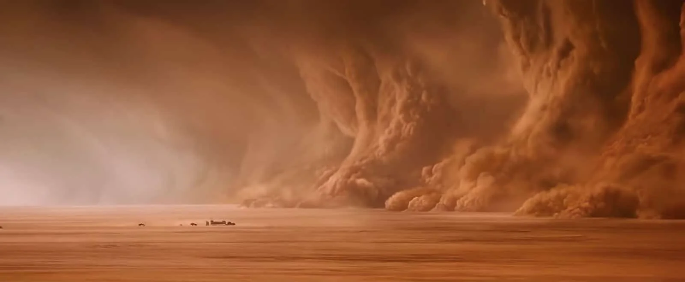
It can also make your subject feel overwhelmed by its location. Of all the various camera shots out there,
consider using the extreme long shot when you need to emphasize the location or isolation.
Long Shot (LS) or Wide Shot (WS)
The long shot (also known as a wide shot, abbreviated “WS”) is the same idea, but a bit closer. If your
subject
is a person then his or her whole body will be in view — but not filling the shot. Here's an example of the
wide
shot size from the movie The Martian:
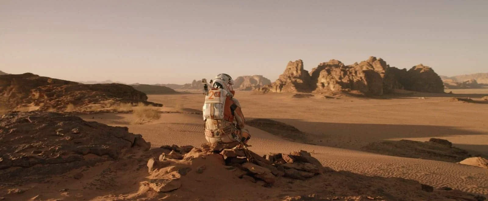
In other words, there should be a good deal of space above and below your subject. Use a long shot (or wide
shot)
to keep your subject in plain view amidst grander surroundings. The wide shot also lets us see the beautiful
background imagery, as well as the onlookers which will make any big moment more cinematic. Of the many
camera
shots, a long shot gives us a better idea of the scene setting, and gives us a better idea of how the
character
fits into the area.
Full Shot (FS)
Now let's talk about camera shots that let your subject fill the frame while keeping emphasis on scenery.
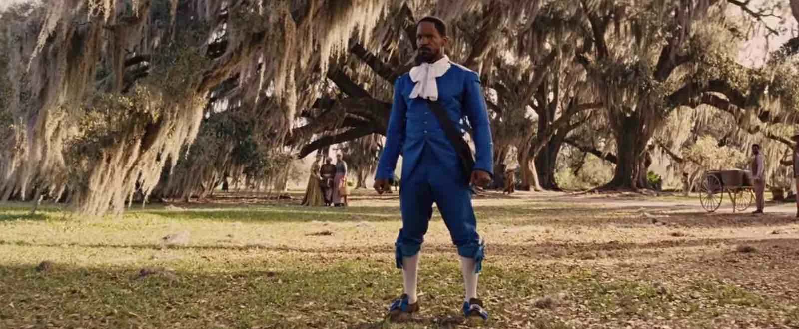
This full shot from one of the best Quentin Tarantino movies Django Unchained is also a tracking shot —
meaning
there is camera movement featured throughout the shot. In this particular case, the camera slowly moves (or
tracks) towards Django. So, technically, this shot begins in a wide shot, moves to full shot (seen above),
and
eventually ends in a cowboy shot. Of all the different types of camera shots in film, full shots can be used
to
feature multiple characters in a single shot, like this full shot size example from Marvel's Guardians of
the
Galaxy:
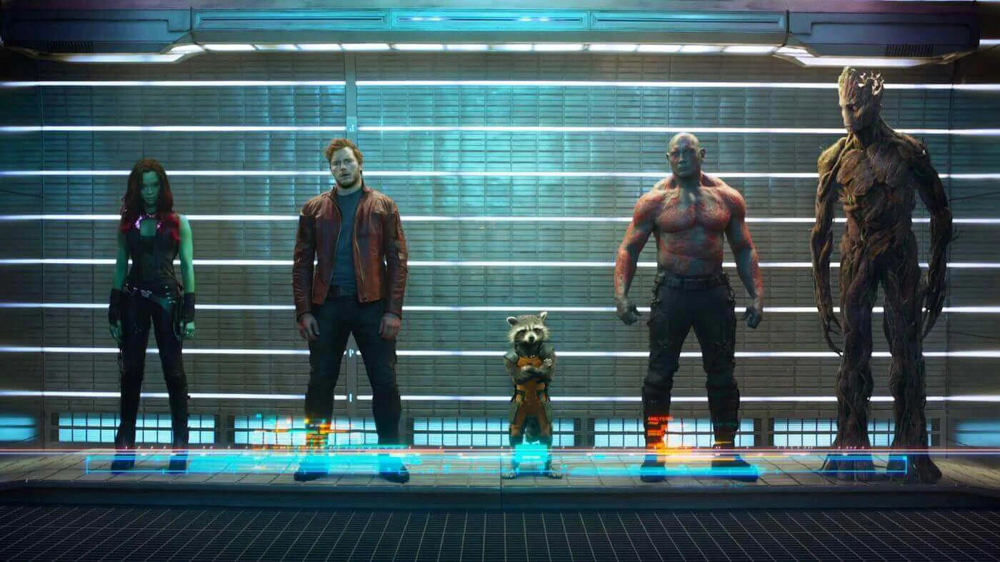
Medium Wide Shot (MWS)
A medium long shot (aka medium long shot) frames the subject from roughly the knees up. It splits the
difference
between a full shot and a medium shot. Here's an example of the medium wide shot size from the movie The
Usual Suspects:
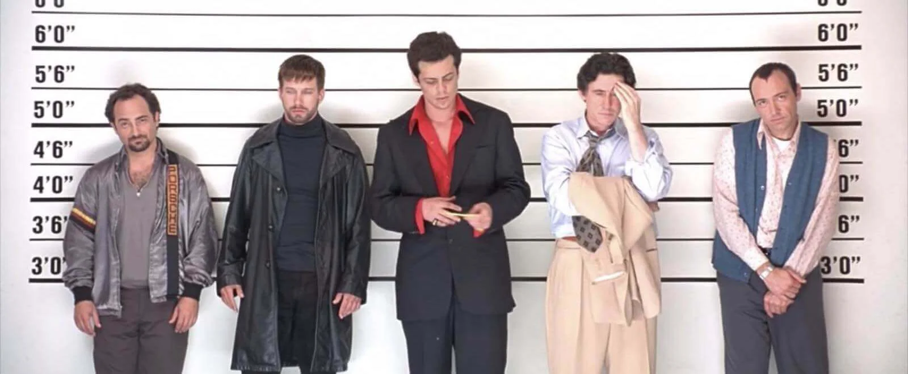
You can always frame camera shots from any angle as well, so don't be afraid to think about medium long shots
when behind a character.
Cowboy Shot (CS)
A variation on this is the Cowboy Shot, which frames the subject from roughly mid-thighs up. It’s called a
“cowboy shot” because it is used in Westerns to frame a gunslinger’s gun or holster on his hip. Here's an
example of the cowboy shot size from the movie Wonder Woman:
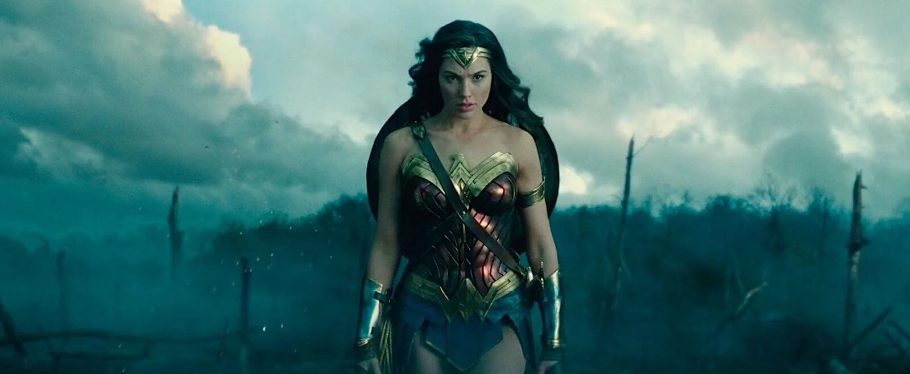
Here is an example of a cowboy shot that's used in a film that has nothing to do with cowboys, and it's also
a three shot:
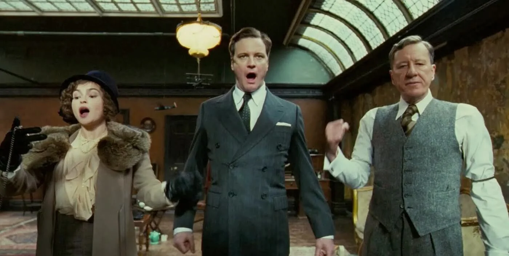
Medium Shot (MS)
Let's move onto camera shots that reveal your subject in more detail. The medium shot is one of the most
common
camera shots. It's similar to the cowboy shot above, but frames from roughly the waist up and through the
torso.
So it emphasizes more of your subject while keeping their surroundings visible. Here's an example of the
medium
shot size from the superhero movie X-Men: Days of the Future Past:
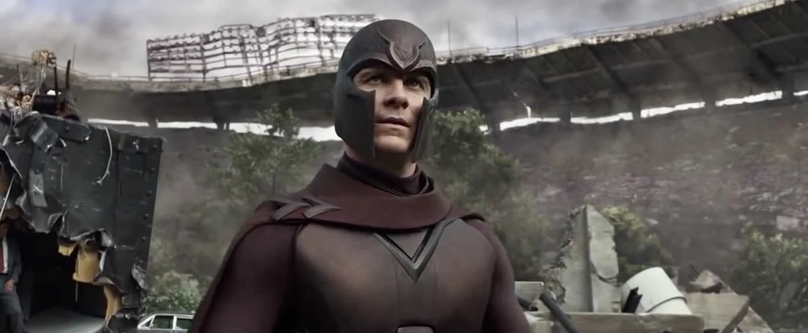
Medium shots may seem like the most standard camera shot around, but every shot size you choose will have an
effect on the viewer. A medium shot can often be used as a buffer shot for dialogue scenes that have an
important moment later that will be shown in a close-up shot. If you don't use all of the different types of
camera shots in film, how can you signal anything to your viewer without shot size contrast.
Medium Close Up Shot (MCU)
The medium close-up frames your subject from roughly the chest up. So it typically favors the face, but still
keeps the subject somewhat distant. Here's an example of the medium close-up shot size from one of the Coen
Brothers’ masterpieces No Country for Old Men:
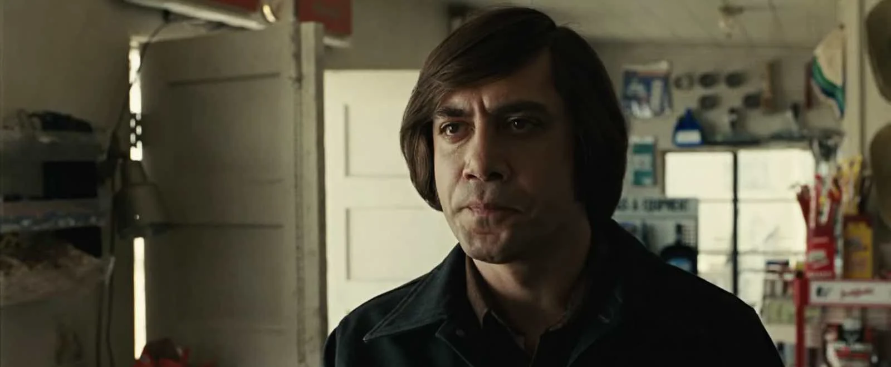
The medium close-up camera shot size keeps the characters eerily distant even during their face-to-face
conversation.
Close Up (CU)
You know it’s time for a close-up shot when you want to reveal a subject’s emotions and reactions. The
close-up
camera shot fills your frame with a part of your subject. If your subject is a person, it is often their
face.
Here's an example of the close-up shot size:
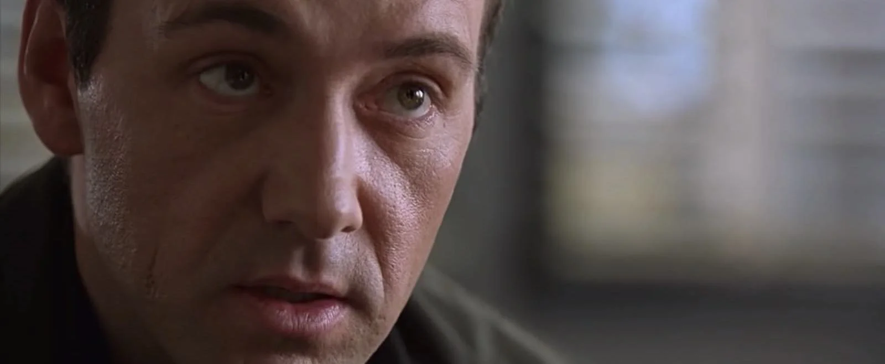
You know it’s time for a close-up shot when you want to reveal a subject’s emotions and reactions. The
close-up
camera shot fills your frame with a part of your subject. If your subject is a person, it is often their
face.
Here's an example of the close-up shot size:
Extreme Close Up (ECU)
An extreme close-up is the most you can fill a frame with your subject. It often shows eyes, mouth and gun
triggers. In extreme close-up shots, smaller objects get great detail and are the focal point. Use an ECU to
emphasize a specific feature of your subject:
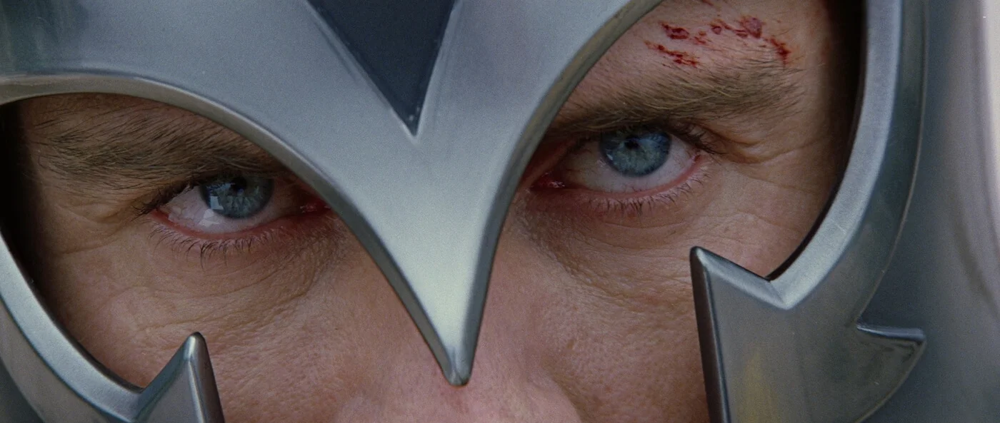
Summary
How you choose to frame your subject will have a specific impact. How close or far your subject is to your
camera
— your shot size — will underscore how the audience should feel about it (or them). Your subject will appear
smallest in a long shot (or wide shot). They will be larger in a medium shot and largest in a close-up shot.
Camera Framing
What is camera shot framing?
Camera shot framing is the art and science of placing subjects in your shots. Camera shots are all about
composition. Rather than pointing the camera at the subject, you need to compose an image.
Single Shot
When your shot captures one subject it’s known as a single shot:
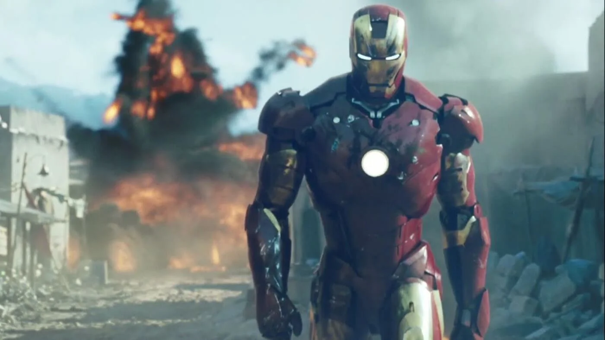
Single shots can be set and framed in any shot size you like, just as long as there is only one character
featured within the frame.
Two Shot
A two-shot is a camera shot with two characters featured in the frame:
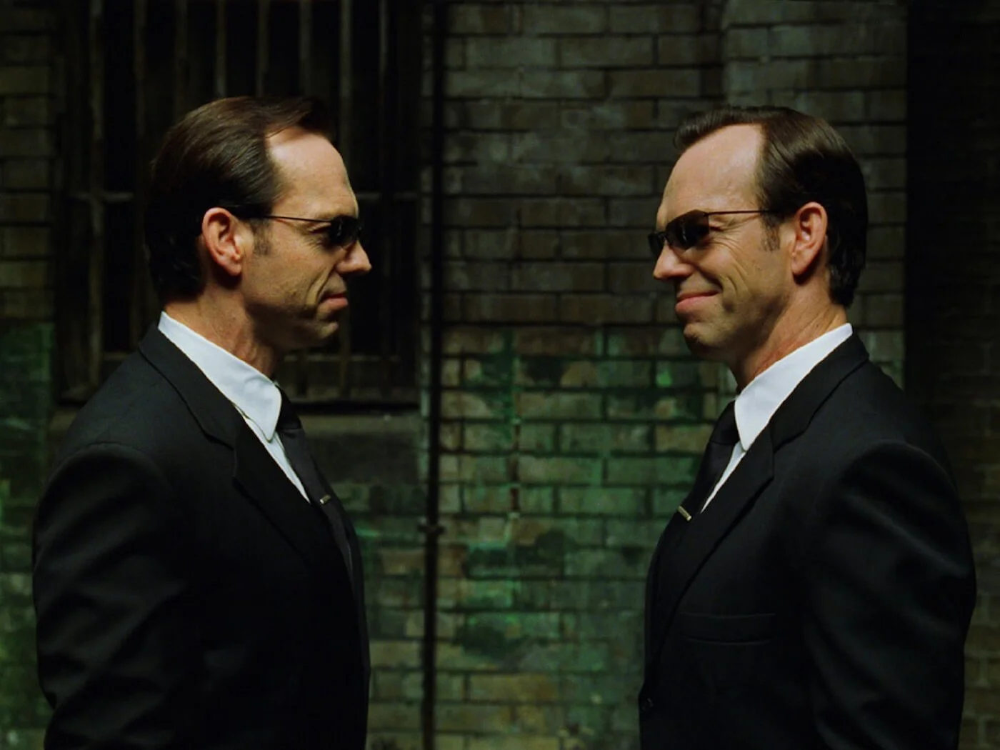
Two shots are often really useful for allowing performances to play out in a single take, which can be
especially
useful for comedy.
Three Shot
A three-shot features three characters in the frame:
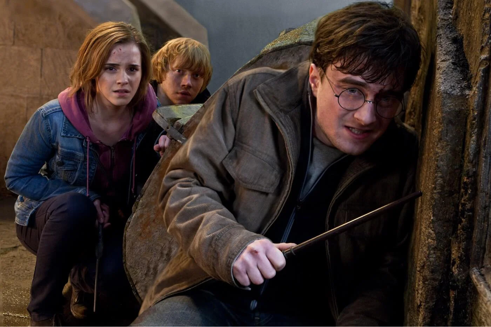
Three shots are really important in adventure films, or really any film that has a group of characters,
because
it is an enormous time drain to shoot 3 singles just to show every character, not to mention jarring.
Over-The-Shoulder Shot (OTS)
Another element of camera shots to consider is the perspective of the shot. An over-the-shoulder shot shows
your
subject from behind the shoulder of another character. Because it emulates perspective, it’s common in
conversation scenes.
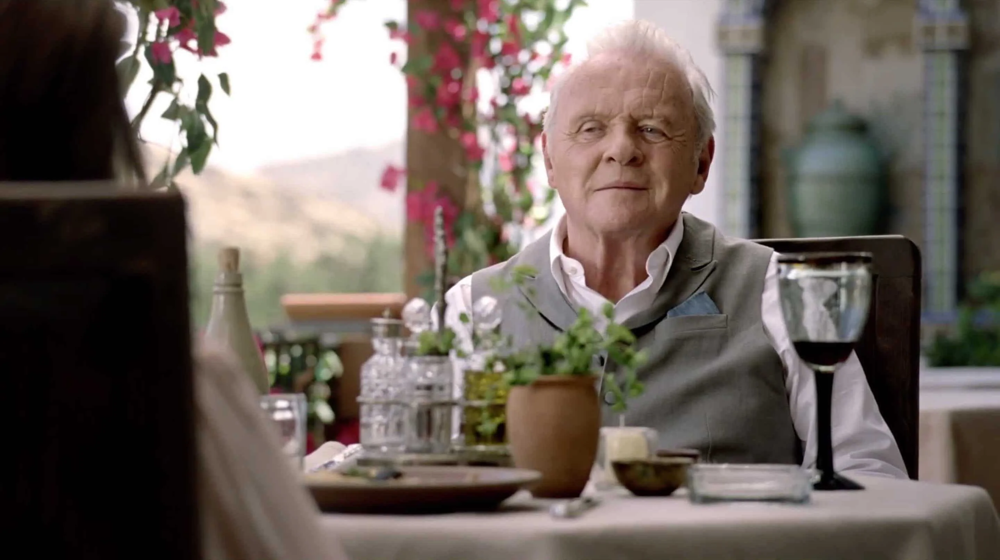
Over-the-shoulder shots can help to provide orientation, and connect the characters on an emotional level.
Here's
our breakdown of the Westworld scene and how OTS shots work so effortlessly.
Over-The-Hip Shot (OTH)
An over-the-hip shot is similar to over-the-shoulder in that the camera is placed with a character's hip in
the
foreground, and the focus subject in the plane of acceptable focus. Here's an example of an over-the-hip
shot
from the movie Minority Report:
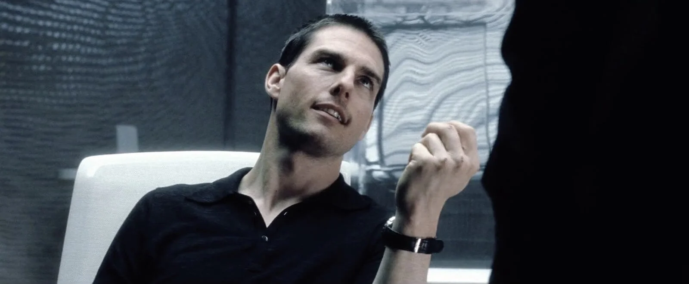
You'll gain a similar effect from an over-the-hip shot as you would an OTS, but if you have one character
standing, and the other sitting, kneeling, or any other configuration that places the subjects on "uneven
terrain" it will often suggest a power imbalance. This is the benefit of blocking and staging your actors
and
camera.
Point of View Shot (POV)
Now let's talk about choosing camera shots that show the point-of-view (or POV) of one of your characters. A
POV
shot is a camera shot that shows the viewer exactly what that character sees. This transports the audience
into
that character.
Camera Focus
What is depth of field?
Depth of field (DOF) is the term used to describe the size of the area in your image where objects appear
acceptably sharp. The area in question is known as the field, and the size (in z-space) of that area is the
depth of that field.
The center most point of the field is known as the point of focus. The imaginary two dimensional plane that
extends from that point is known as the plane of focus. And any part of your image that falls directly on
this
plane is officially in focus.
Rack Focus vs. Focus Pull
Manipulating focus is another way of communicating with your camera shots. The vast majority of films you
watch
will keep their subjects in focus 95% of the time, with the odd slip up here and there.
The first assistant cameraman (or “First AC”) will pull focus to make sure that the subject stays within the
acceptable focus range while they move to various depths within the frame.
A rack focus is an emphasized focus pull, where the acceptable focus range is intentionally shifted from one
subject to another. This is an aggressive use of focus as a story telling device:
Focus Pull = Passive vs. Rack Focus = Aggressive
Shallow Focus Shot (Shallow DOF)
In shallow focus shots, your subject is in crisp focus while the foreground and background scenery is out of
focus. This limits your depth of field to create emphasis on your subject.
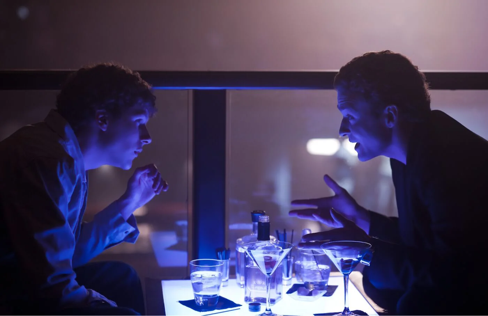
Deep Focus Shot
In a deep focus shot, everything in your frame is in focus. This is when you need your audience to feel the
scenery or particular scene elements.
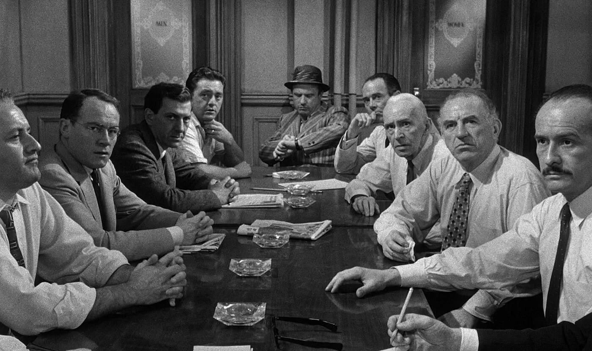
Tilt-Shift Shot
A tilt-shift lens rotates perspective within the lens and emulates selective focus. It can make parts of your
image appear in sharp focus while others are out of focus.
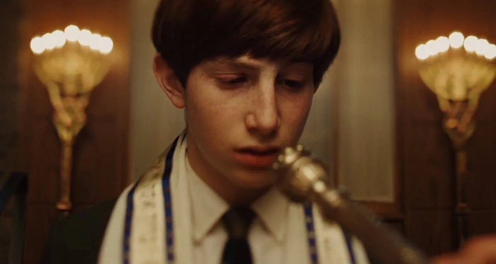
Here's another tilt-shift shot example from The Assassination of Jesse James by the Coward Robert Ford:
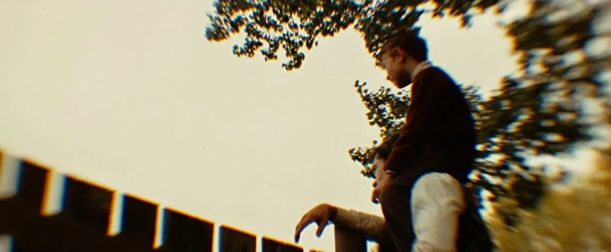
Soft focus
Whereas deep focus keeps everything in focus, and shallow focus keeps something in focus, soft focus shots
keep
nothing in 100% sharp focus. This is caused by either a flaw in the lens itself or through special filters.
Soft focus is perfect when filming a dream or memory — the glow around everything is both wistful and
slightly
unreal.
Camera Angles
What is camera shot angle?
The camera shot angle is used to specify the location where the camera is placed to take a shot. The position
of
the camera in relation to the subjects can affect the way the viewer perceives the scene. A scene may be
shot
simultaneously from multiple camera angles to amplify the cinematic effect and the emotions.
Eye Level Shot
First, consider the most common height: the eye level shot. When your subject is at eye-level they’re in a
neutral perspective (not superior or inferior). This mimics how we see people in real life -- our eye line
connecting with theirs.
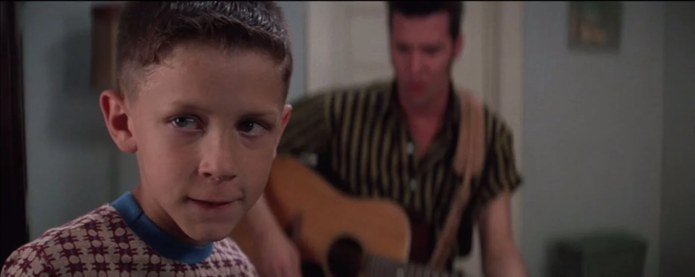
Low Angle Shot
A low angle shot frames the subject from a low camera height looking up at them. These camera shots most
often
emphasize power dynamics between characters.
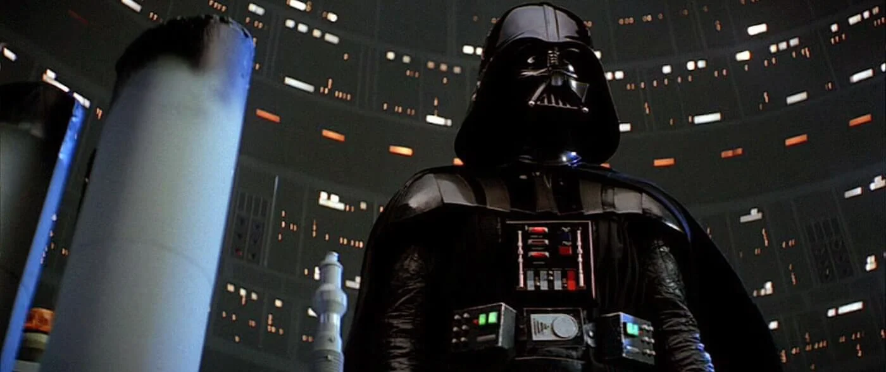
High Angle Shot
In a high angle shot, the camera points down at your subject. It usually creates a feeling of inferiority, or
“looking down” on your subject. Here's an example of a high angle shot from the movie
The
Princess Bride:
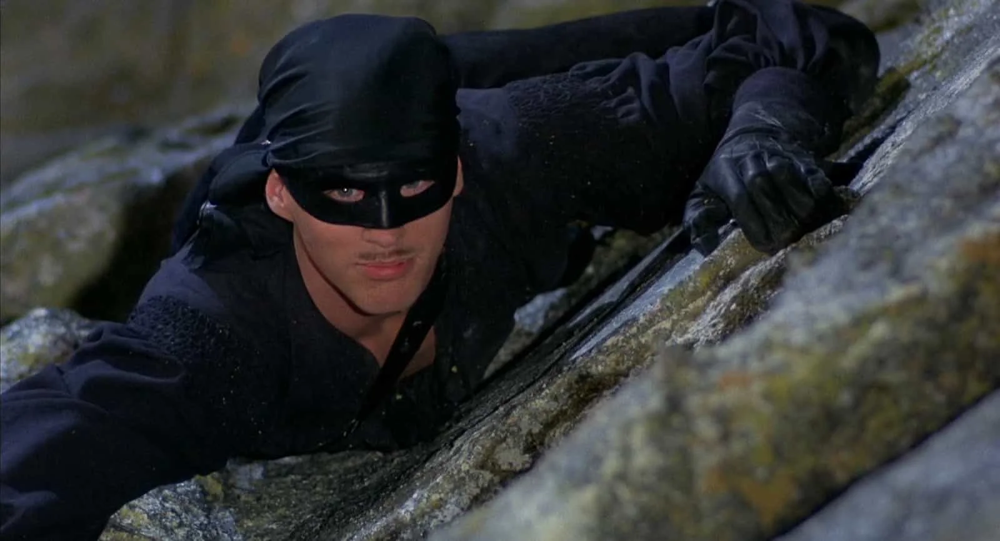
Hip Level Shot
A hip level shot is when your camera is roughly waist-high.
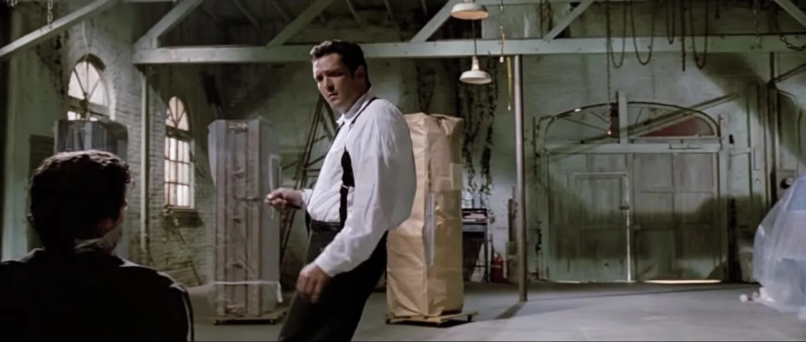
Knee Level Shot
This is when your camera height is about as low as your subject’s knees. They can emphasize a character’s
superiority, if paired with a low angle.
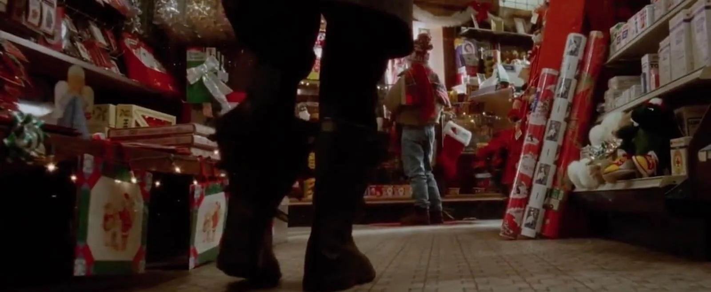
Here's another knee level shot example:
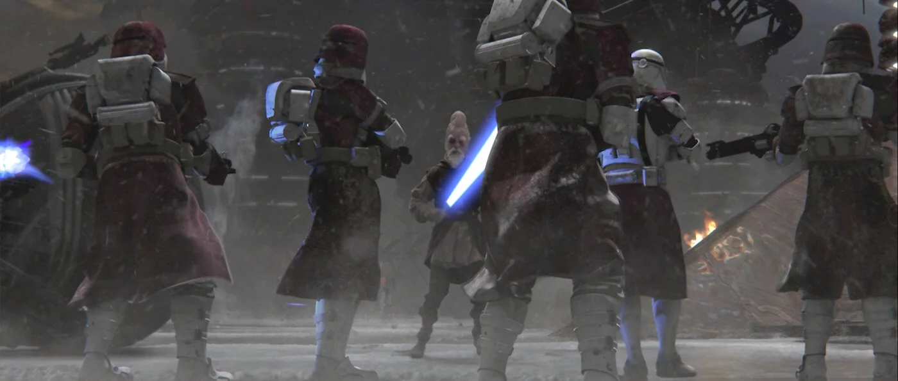
Ground Level Shot
A ground level shot is when your camera’s height is on ground level with your subject. Needless to say, this
shot
captures what’s going on the ground your subject stands on.
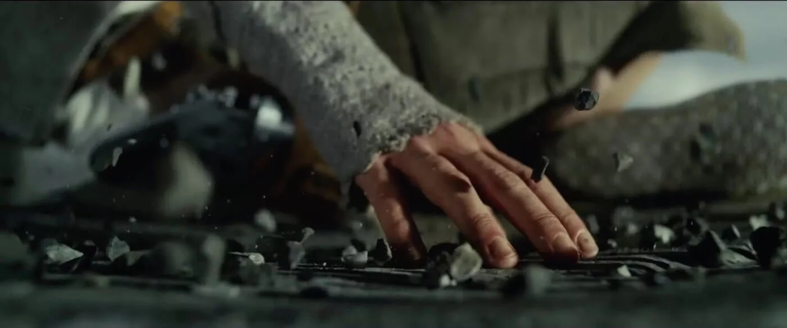
Here's another ground level shot example from one of many Stanley Kubrick's marvelous movies, Full Metal
Jacket:
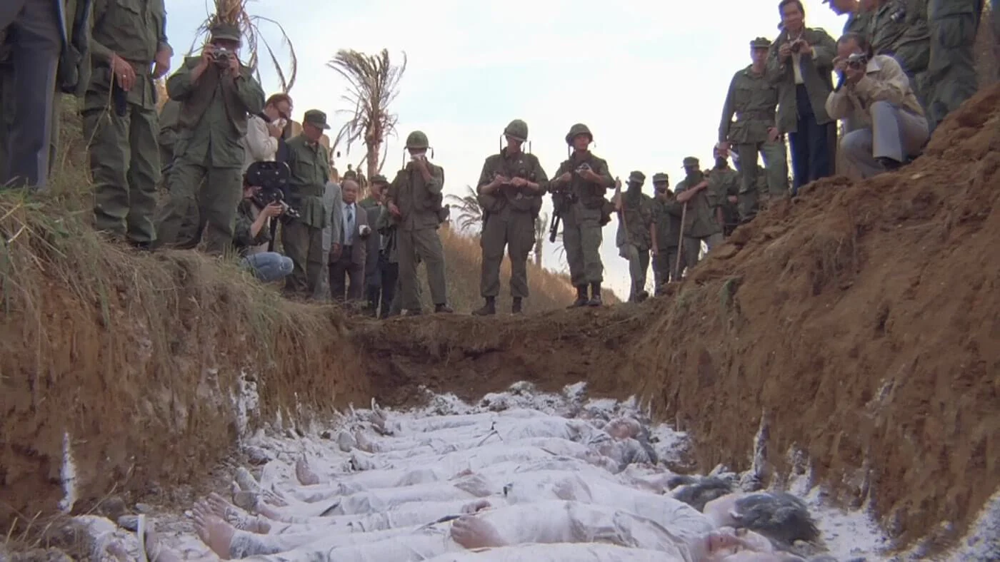
Shoulder Level Shot
This is when your camera is roughly as high as your subject’s shoulders. Shoulder level shots are actually
much
more standard than an eye level shot, which can make your actor seem shorter than reality:
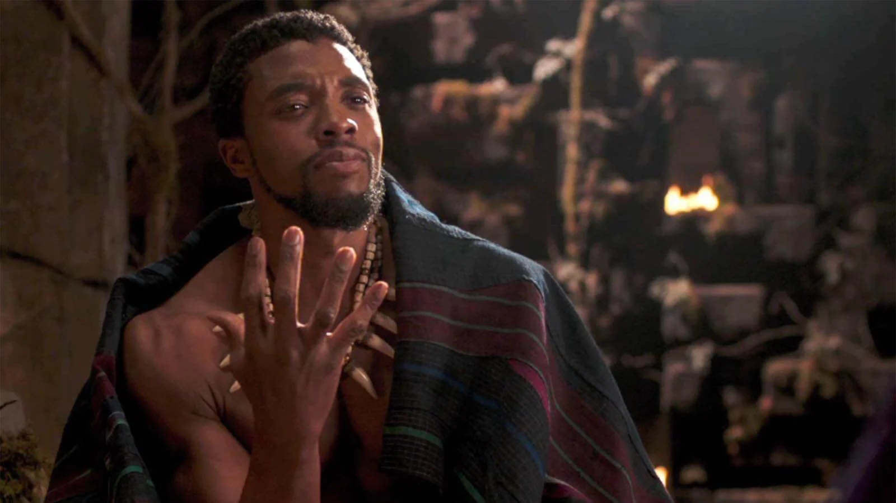
Dutch Angle or Dutch Tilt Shot
For a dutch angle (dutch tilt), the camera is slanted to one side. With the horizon lines tilted in this way,
you
can create a sense of disorientation. This video breaks down a key moment in Mission: Impossible when Ethan
first realizes that he's being set up.
Bird's Eye View Shot or Overhead Shot
An overhead shot is from way up high, looking down on your subject and a good amount of the scenery
surrounding
him or her. This can create a great sense of scale and movement.
Here's an overhead shot example:
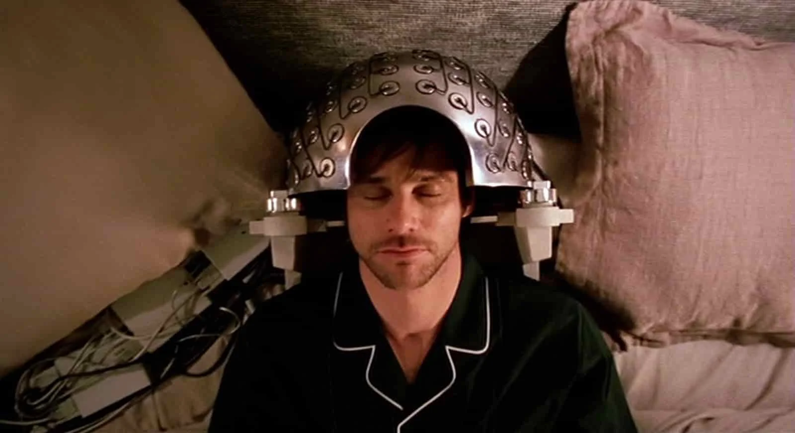
Aerial Shot
Whether taken from a helicopter or drone, this is a shot from way up high. It establishes a large expanse of
scenery. The opening shots of the movie Blade Runner use them to establish futuristic
cityscapes.
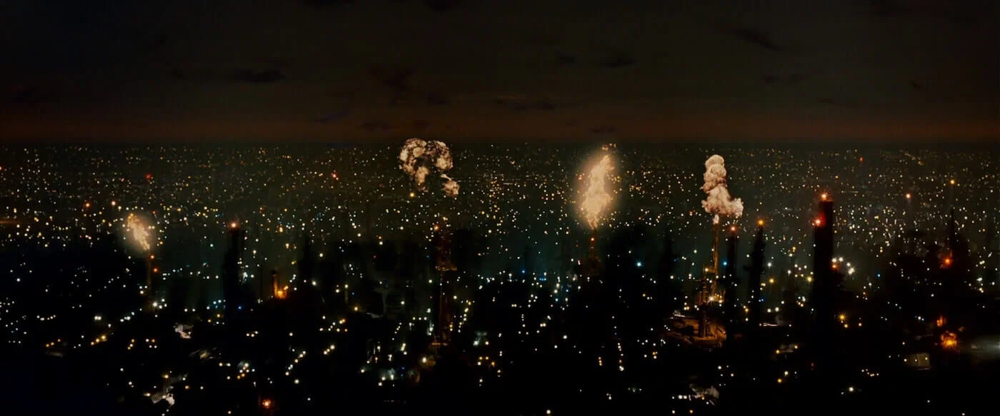
Errors
All information has been collected with the utmost care, however, mistakes always happen. Location
information is sometimes difficult when artists move very early in life, or the indication of the era, if
the lifetime falls between two centuries.
Image Generation for Styles
All images were generated with either the Deliberate v2
or the DreamShaper 3.2 Checkpoint. Sampler was
DMP++ 2M Karras or DMP++ SDE Karras, depending on the better result. Final resolution never smaller than
768px × 768px.
The prompt for the textbox
was:
--prompt style of ArtistName --negative_prompt nude, nsfw, frame, border, text
--prompt style of ArtistName, woman --negative_prompt same as above
--prompt style of ArtistName, Henry C_____ --negative_prompt superman
--prompt style of ArtistName, city --negative_prompt text, frame, border
While Deliberate has some NSFW Checkpoint mixed in and needs 'nsfw' in the negative prompt, DreamShaper
likes manga a lot and frequently requires 'manga, anime' in the np.
Why these prompts?
The first line produces a broad, uninfluenced impression of what is most common for that artist (landscape,
person, etc.).
With 'woman', you will get a wider range of portraits that are more in line with the artist's personal
aesthetic.
For the third line: The actor Henry C. is currently well-known and has been well-trained into SD. You can
also judge the dominance of a style if he is still rendered normally (weak artist style) or when his
superhero costume appears.
The last line, 'city' (sometimes replaced by 'village'), will give you a good idea of how houses, people, and
technical items (cars, bikes, etc.) appear.
Pure Data
Use only-data.html for a version without
images. That page also includes a list of all artists that were checked for availability.
The JSON data files had to be changed to .js and wrapped with a variable to allow offline use (CORS).
Useful Links
Links that helped me understand the technical side of Stable Diffusion (no affiliation):